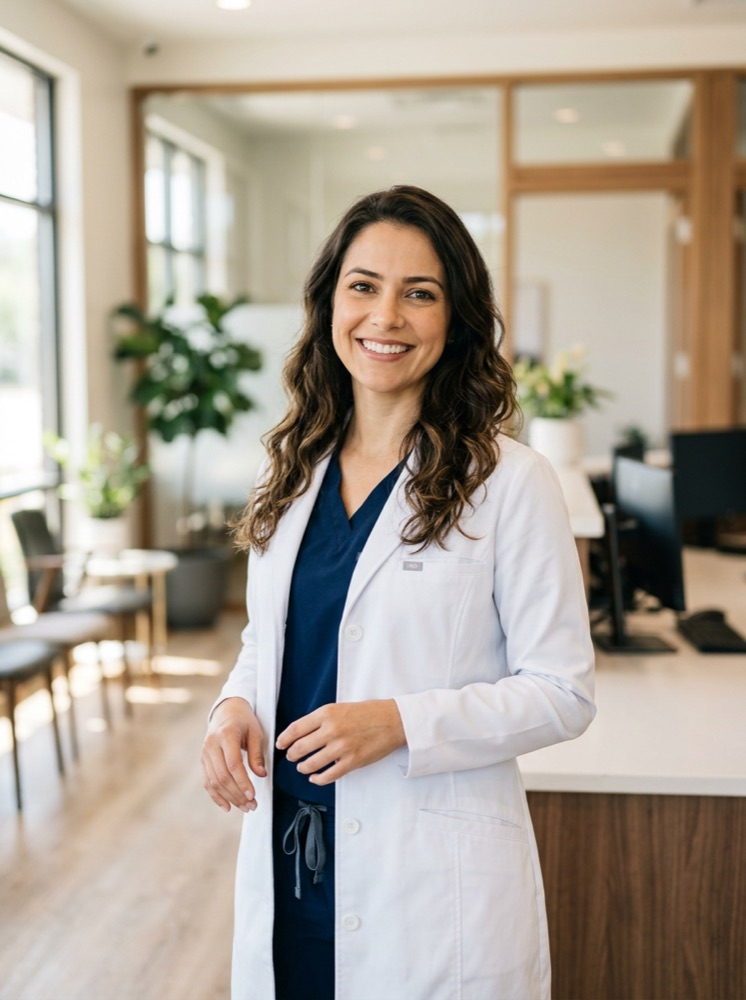
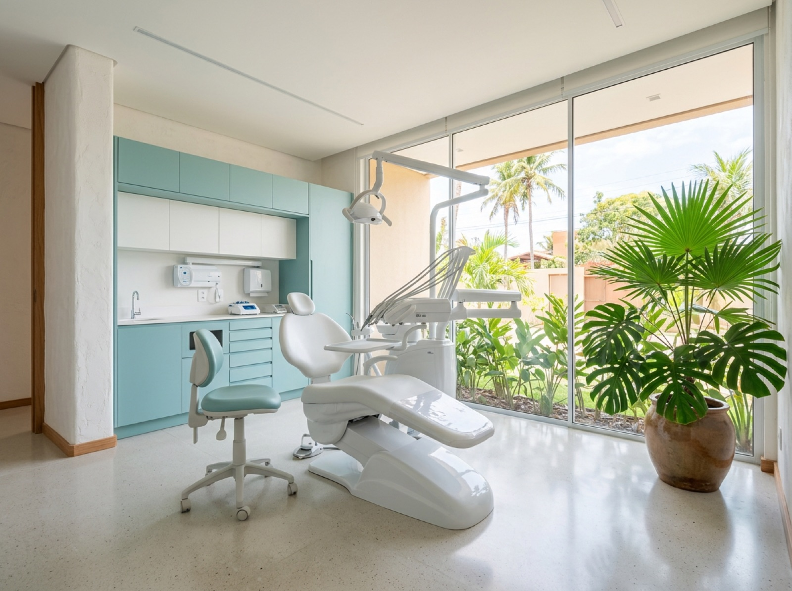

Uma clínica de família, no centro de Caruaru
Começamos em 2014 com uma cadeira e uma recepcionista. Hoje são quatro dentistas, mas o jeito de atender continua o mesmo: explicar antes, cobrar o combinado e acompanhar de perto.

Quem cuida de você
Cada dentista atende a sua especialidade, e o caso é discutido em equipe quando precisa de mais de um tratamento.
- Dr. Rafael Queiroz
- Ortodontia
- Dra. Camila Rêgo
- Endodontia
- Dra. Beatriz Nunes
- Odontopediatria
Estrutura

Três consultórios equipados
Raio-X digital na própria clínica, esterilização em autoclave e materiais de uso único.
Acessível
Elevador, banheiro adaptado e estacionamento conveniado na rua de trás.